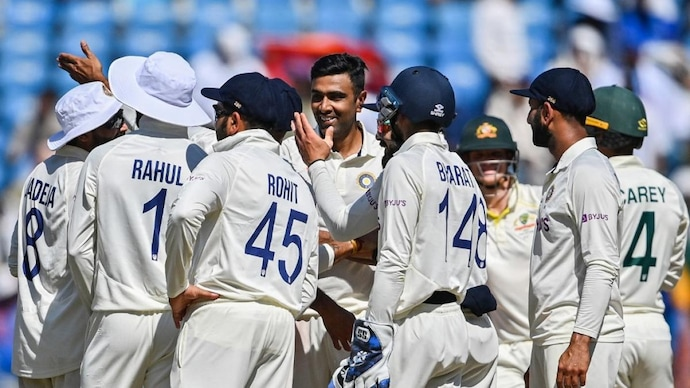

Border-Gavaskar Trophy: R Ashwin, Ravindra Jadeja give India innings victory over Australia in Nagpur Test
Border-Gavaskar Trophy: R Ashwin picked his 31st 5-wicket haul as India defeated Australia by an innings and 132 runs in the first Test of a four-match series. Australia were bowled out for 91 on the third day of the Nagpur Test on Saturday after India had taken a 223-run lead.
R Ashwin decimated Australia on Day 3 of the Nagpur Test (AP Photo) India defeated Australia by an innings and 132 runs in the 1st Test in Nagpur R Ashwin picked a 5-wicket haul in the second innings of the Test
Jadeja (5/47 and 2/34, 70), Rohit (120), Axar (84) played huge roles in the win
By Rajarshi Gupta: India defeated Australia by an innings and 132 runs at the VCA Stadium in Nagpur on Saturday. India stormed to victory inside three days after high quality performances from skipper Rohit Sharma, Ravindra Jadeja (5/47, 2/34 and 70), Axar Patel (84, 1/06) and R Ashwin who picked his 31st 5-wicket haul in Test cricket.
India, who have won the last 3 Test series against Australia, now have a 1-0 lead in the current edition of the Border-Gavaskar Trophy. Australia were blown away inside a session on Saturday as they were bundled out for 91 in 32.3 overs. The visitors' confidence would have taken a huge blow after the crushing defeat in Nagpur.
India vs Australia, 1st Test Day 3 Highlights After India had taken a massive first-innings lead, R Ashwin struck in his first over (the second over of the Australian innings), to dismiss Usman Khawaja. He would have had another wicket to his name had Virat Kohli not dropped an easy chance off David Warner. But India did not have to wait long for their next breakthrough as Ravindra Jadeja continued his dream comeback with the wicket of Marnus Labuschagne. Steve Smith and David Warner together at the crease is an ideal set-up for Australia but rarely has the duo batted under more pressure than the third afternoon of the Nagpur Test. Up against world-class spinners on a deteriorating pitch, the task was cut out for Australia's most experienced cricketers. Moreover, Warner would have wanted to make it count after being dropped by Kohli.
Farzi Review: Shahid Kapoor's series is an intriguing watch with solid performances Fortunately for India and R Ashwin, Virat Kohli's mistake at slip did not prove costly.
Ashwin beat David Warner's inside edge with a peach of a delivery and had him plumb LBW. Warner chose to review but replays showed the ball would have hit leg stump on umpire's call. Australia were three down with Steve Smith left to bat with the likes of Matt Renshaw, Peter Handscomb, Alex Carey and the tail.
Matt Renshaw had been controversially added to the Australian XI at the expense of an in-form Travis Head. After a golden duck in the first innings, Renshaw managed to score only 2 before being sent back by R Ashwin who continued to work his magic. Ashwin wasn't done yet and he trapped Peter Handscomb lbw soon after to leave Australia reeling.
R Ashwin was on fire and when he removed Alex Carey, the off-spinner equaled Anil Kumble's record for most five-wicket hauls in India. Both Kumble and Ashwin now have 25 five-wicket hauls in India. While Kumble has 36 five-wicket hauls in Tests, Ashwin has reached the milestone on 31 occasions.
R Ashwin had a terrific day but it was impossible to keep Ravindra Jadeja out of the contest. After pocketing Marnus Labuschagne, Jadeja took the wicket of Pat Cummins as Australia continued to slide towards a heavy defeat.
Axar Patel had gone wicketless in the first innings but he was luckier in the second innings - with Australia on the verge of an innings defeat, Axar dismissed debutant Todd Murphy.
India added 79 runs to their overnight score and extended their already impressive lead to 223 thanks to Axar Patel's career-best 84 and an enterprising 37. Ravindra Jadeja fell to Toddy Murphy for 70 early on the third day but Shami joined Axar at the crease to not just frustrate Australia but put India in a position of strength on a pitch which had started to show some bite.
Axar Patel and Ravindra Jadeja had defied Australia with an 88-run partnership for the 8th wicket before Mohammed Shami joined Axar Patel on Day 3 to further pile on the agony for Australia. The pair added 52 for the 9th wicket in quick time and by the time Shami became Todd Murphy's 7th wicket, the Indian lead had swelled past 200.
After his partnership with Ravindra Jadeja on Friday, Axar Patel had said he backed himself to do well with the bat whenever he got the opportunity. After a poor exhibiting of Test match batting from the Indian top-order (with the exception of Rohit Sharma), Axar Patel got another chance to show how capable he is as a batter. On Saturday, he was brilliant with his timing and added 30 runs to his overnight score before finally falling to Pat Cummins for a classic 84.India and Australia will play the second Test of the 4-match series in Delhi from February 17.